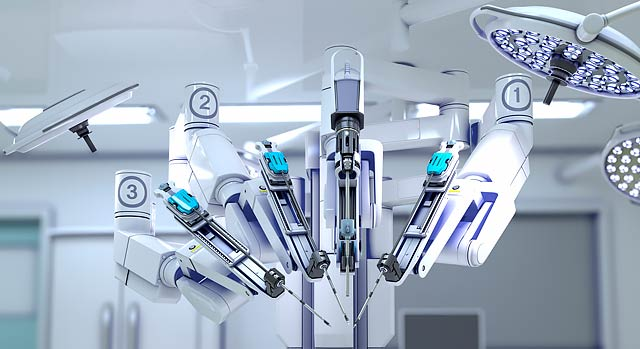

With the use of Collabrative Telepresence Healthcare could forever be changed for the better. As it relates to doctors who specialize in various fields and conditions within medicine, whenever an ill patient may be seeking treatment from these specialists instead of possibly making long and tedious trips to get to the doctor's location wherever in the world they may be the use of Collabrative Telepresence could reduce or possibly remove traveling entirely. These specialist doctors could remain in a remote location and manipulate telerobots to perform the surgeries and proceduries on patients. Some patients may be too ill to travel to get the best treatment possibly and in a world with this technology readily available it could greatly improve the lives of patients needing treatment from specialists not available to them in their own contry or territory.

Copyright © 2019 Chavodon Industries. All Rights Reserved